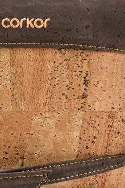
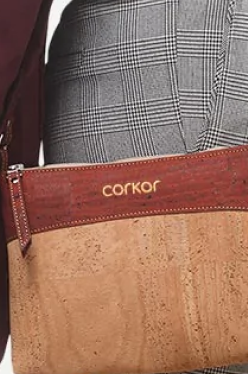
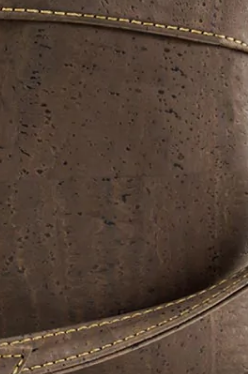
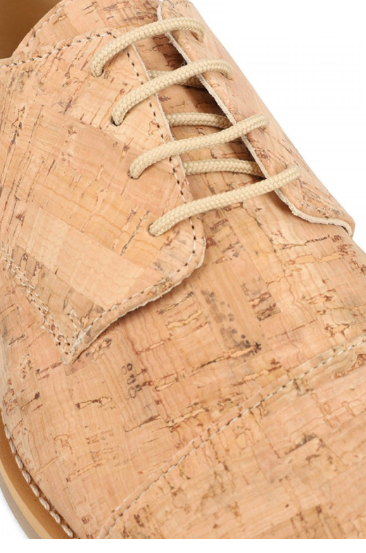
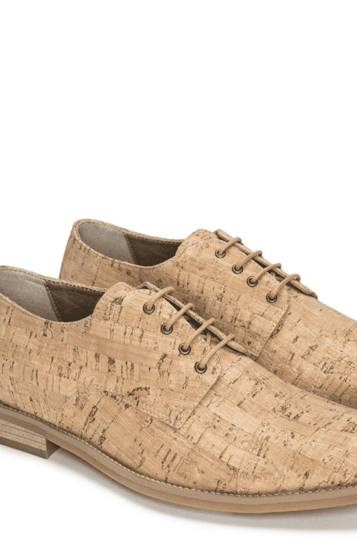
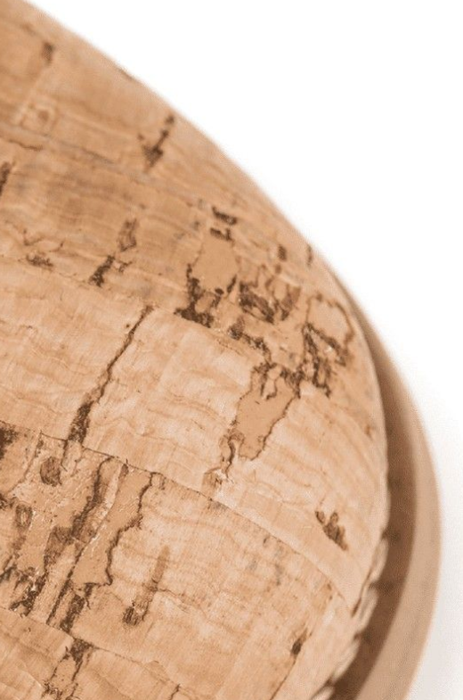
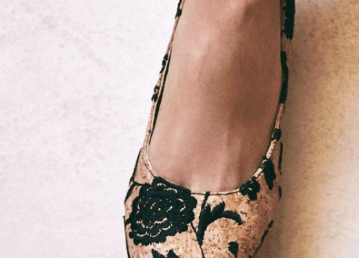

Cork
1.Corkor

Corkor contributes to a better world with cruelty-free accessories made of cork. It avoids leather products completely and prefers using smooth, soft, resistant, and incredibly light cork fibers

Crossbody Bag
Crossbody Bag


2.Nae
Nae Vegan Shoes makes sustainable footwear in Portugal. It creates ethical, vegan, and affordable boots, flats, shoes, sneakers, sandals, heels, and accessories using cork.
Nae Vegan Shoes makes sustainable footwear in Portugal. It creates ethical, vegan, and affordable boots, flats, shoes, sneakers, sandals, heels, and accessories using cork.


Lina Cork Mid-Heel Vegan Shoes
Lina Cork Mid-Heel Vegan Shoes

Lina Cork Mid-Heel Vegan Shoes
Lina Cork Mid-Heel Vegan Shoes